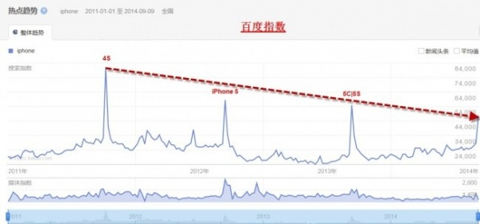
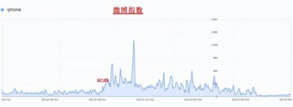
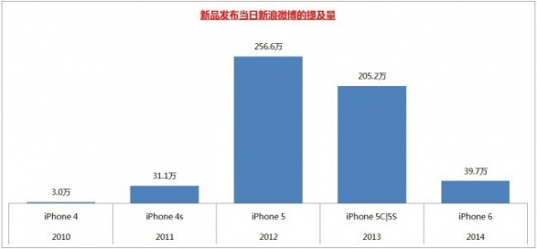
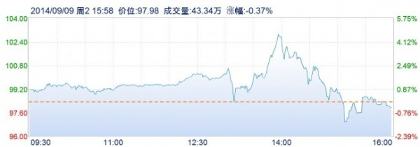

アップルの今年の秋の新製品発表会は、私たちに真新しい4.7インチのiPhone 6と5.5インチのiPhone 6 Plusをもたらしました。そして、正式発売日が9月19日であることは皆さんご存知のはずです。中国本土は最初の発売地域リストに含まれておらず、第二陣の予約リストにも中国本土は含まれていませんでした。過去2世代のiPhoneを見渡すと、実質的なブレークスルーはなく、既存の基盤の上で小幅な修正を加えただけでした。iPhoneはもう老いてしまったのでしょうか？5つのデータ図が教えてくれます。
第一の図：百度指数

百度指数とは、キーワード「iPhone」が百度でどれだけ検索されているかの規模、一定期間の上昇・下降の勢い、および関連するニュースや世論の変化を示します。トレンドを見れば明らかでしょう。もしファイアウォールを回避してGoogle Trendsを調べられるなら、動向もほぼ同じであることがわかるでしょう。
第二の図：淘宝検索指数

淘宝検索指数も、ユーザーが淘宝上でキーワード「iPhone」を検索した量とその推移を表しています。昨年1月から今年7月までの検索量はひどく落ち込みました。5Cや5Sの発売でも巻き返せませんでした。そして今年8月末のこの高値は、以前のデータと比較すると、人為的な操作の痕跡が明らかであることが簡単にわかります。
第三の図：新浪微博指数

微博指数は、微博におけるキーワードの話題度を反映しています。現在は2013年1月からのデータしか取得できません。最初の2つの図から、2013年1月から2014年8月までの期間はそもそも低迷期だったことがわかりますが、微博指数を見ると、この低点はさらに下がり続けています。つまり、人々は微博でiPhoneについて言及したくなくなっているということです。また、そのことはiPhoneの大衆化（誰にでもありふれた存在になったこと）を反映しています。
第四の図：新製品発表当日の微博言及量

新浪微博は09年から始まったので、この5年間のiPhone製品発表当日に新浪微博で「iPhone X」というキーワード（Xは製品の数字）に言及した微博の数を集計しました。iPhone 5でピークに達し、その後低下し、iPhone 6発表時、つまり昨日は、わずか39.7万件の微博での言及しかなく、以前の2つの製品に遠く及ばないものでした。一言で言えば、観客はもうツッコミどころがなくなったのです。アップル発表会当日の中語通訳のハプニングや中国市場での発売の混乱でさえ、微博におけるiPhoneの世論を挽回することはできませんでした。
第五の図：アップルの昨日の株価動向

図からわかるように、発表会当日は実際には最初は皆が大きな期待を寄せていましたが、発表会の進行に伴い、アップル株は下落を続けました。ただし、今日のアップル株は3%上昇しており、今後も上昇し続けるかもしれません。株価の上昇は、アップルの大衆化の成功を表すだけであって（単なる財務データの勝利であり）、製品の成功を表すものではありません。消費者の熱意はすでに冷めてしまったのです。
出典：筆触オンライン